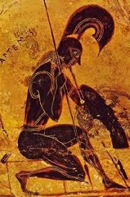
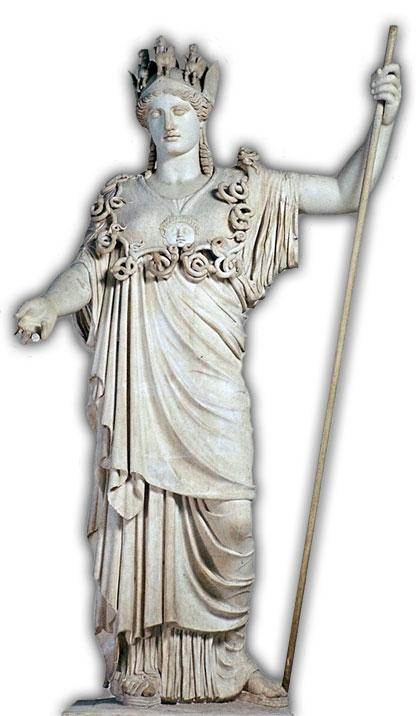

| Noms | Images | Présentations |
|---|---|---|
| Aphrodite | Déesse de la beauté, de l'amour, du plaisir, de la procréation et de la séduction. Les attributs d'Aphrodite sont la colombe et la tournelle. Elle est souvent représentée avec une couronne. | |
| Apollon | Dieu du chant, de la musique, de la poésie, de la purification, de la guérison, du tir à l'arc, des épidémies, de la lumière et du soleil. Il est le conducteur des 9 muses. C'est aussi l'un des principaux dieux capables de divination. | |
| Arès |  | Dieu de la guerre offensive, de la burtalié et de la destruction. Fils de Zeus et de Héra, il est souvent apelé "Le Furieux". Il va au combat accompagné de sa soeur Eris (la Discorde), ses fils Déinos (la Terreur) et Phobos, ainsi que d'Engo, déesse des Batailles. |
| Artémis | Déesse de la chasse, du tir à l'arc, des épidémies, de la Lune, protectrice des aninmaux et des lieux sauvages, accouchements et protectrice des jeunes enfants. Son frère jumeau est Apollon. Elle est la fille de Zeus et de Léto. Elle a le pouvoir de faire naître des épidémies mais également le pouvoir de guérison. | |
| Athéna | Déesse de la guerre et de la sagesse mais aussi de la stratégie et des inventions, protectirce des héros, patronne des artisans ainsi que des arts et des lettres. Fille de Zeus et de Métis, elle a pour attributs la lance, le casque, le serpent, l'Égide (un bouclier sur lequel la tête de Méduse est fixée), ainsi que la victoire ailée. Son animal sacré est la chouette. Elle est considérée comme la patronne et protectrice des plusieurs villes de Grèce, notamment celle d'Athènes. | |
| Déméter | Déesse de l'agriculture et des moissons, fille de Cronos et de Rhéa. Elle est la mère de Perséphone et de Ploutos. Cette déesse est l'une des divinités les plus favorables aux humains et elle se réjouit de la paix et du labeur. | |
| Dyonisos | Dieu du vin, de la vigne, de la semance, de la fertilité, de l'allégresse et du théâtre. Ancien Feu divin comme l'attestent de nombreux éléments de sa légende et de son culte, il est le fils de Zeus et de la mortelle Sémélé ou selon les sources de Déméter ou de Perséphone. Réparties entre l'automne et le printemps, ses festivités sont liées au cycle annuel et notamment au retour du printemps. | |
| Hephaistos | Dieu du feu, des forges, de la métallurgie et des volcans. Il est le fils de Héra mais, le touvant trop laid, elle le jeta du haut de l'Olympe. Cette chute le fera boiter toute sa vie. Il sera alors élevé par Thétis et Eurynomé, puis retournera sur l'Olympe pour se venger de sa mère. | |
| Héra |  | Déesse du mariage et de la fécondité, elle est la reine des déesses et épouse de Zeus. Elle est très jalouse et se venge de toutes les aventures extra conjugales de son mari. |
| Hermès | Dieu du commerce, des voyages, des voleurs et messager des dieux (pincipalement de Zeus). Fils de Zeus et Maïa, il est le donneur de la chance, l''inventeur des poids et des mesures, ainsi que le gardien des routes et des carrefours. Il conduit égalament les âmes aux Enfers. | |
| Hestia |  |
Déesse du foyer domestique, du ménage et de la famille mais aussi de la pudeur. Ses attributs sont le feu sacré, le foyer (familial comme civique), et la torche. Fille aînée de Cronos et de Rhéa, soeur de Zeus, Poséidon, Hadès, Héra et Déméter, elle appartient à la génération des dieux mineurs. |
| Poséidon | Dieu de la mer, il est le fils de Cronos et de Rhéa. Son trident, forgé par les cyclopes pendant la Titanomachie, lui permettant de soulever les eaux. Il est l'un des trois maîtres de l'Univers avec ses frères, Zeus et Hadès. | |
| Zeus | Roi des dieux, du ciel et de la foudre. Son père est Cronos et sa mère est Rhéa. Il a beaucoup d'enfants,à cause de ses nombreuses infidélités à Héra. |
Et voilà! C'était une toute petite présentation des dieux résidents à l'Olympe, si vous voulez en savoir plus sur leurs hsitoires, il existe de nombreux sites pouvant répondre à vos questions. Bonne lecture!